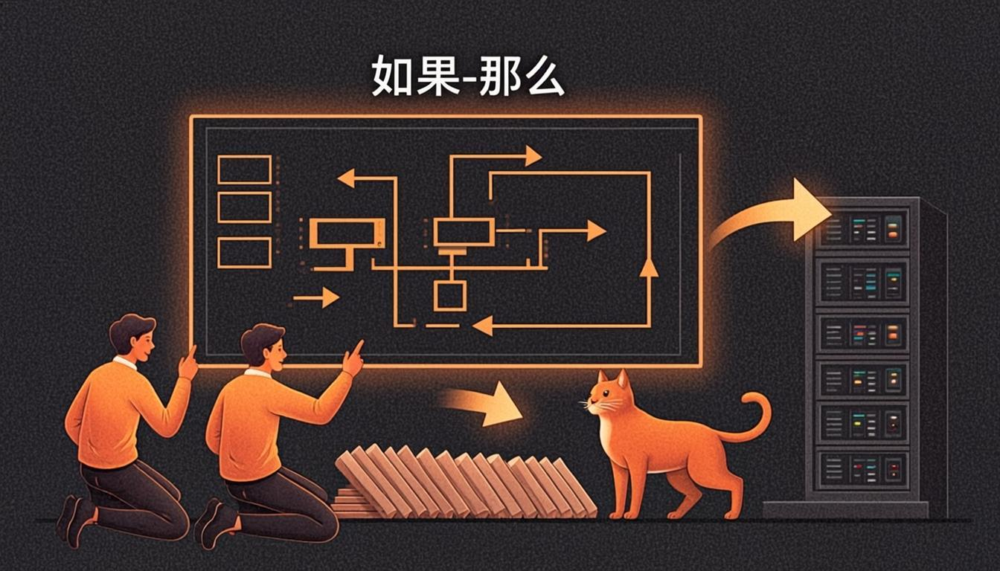

Warm-up
10 minsport · rules · non-negotiables🎧 Listen to the questions
❓ Three questions — click a card to open the sentence starters
Listening — The Rollback Drill
12 minaudio + comprehension
🧩 Before you listen: 10 key words
Click a word — a definition and an example will open. The Russian gloss is there to check your understanding. Listen to the recording of all ten words.
🎧 Track 1 — The Rollback Drill
🌍 Extension — BBC 6 Minute English: The Enhanced Games
From the yearly plan: The Enhanced Games ↗
Task: what is the idea of the Enhanced Games? Note 2 if-sentences or rules-style phrases. Would the rules of such a competition be written in zero conditional?
Reading — The Studio Laws (internal wiki)
10 minrules + rule spottingHarbour Lights Wiki · Page 12: Studio Laws
Category: internal guidelines · Owner: Dana · Status: non-negotiable
These laws describe how our studio runs. They are not plans and not wishes — they are true every time.
1. If the build fails, we roll back to the previous version. Nobody fixes anything live.
2. If a bug is critical, the release stops. A red light is a red light.
3. If someone breaks the build, they bring cake on Monday. The cake rule has no exceptions.
4. If a tester reports a bug without a screenshot, the ticket goes back to the reporter.
5. If the servers go down during a demo, we switch to the trailer. Always have a plan B that is already recorded.
6. When in doubt, ask. A five-minute question saves a five-hour rewrite. ("When in doubt" = "if in doubt" — when and if are twins here.)
🌍 Extension — GDC Vault: free talks
From the yearly plan — pick a short free talk or slide deck about production or QA: gdcvault.com/free ↗
Task: extract 2 rule-like statements and rebuild them as zero conditionals: If we ship on Friday, the build freezes on Thursday.
Grammar — The Zero Conditional
10 minrules + 4 exercisesZERO CONDITIONAL — the law
- Form: If + Present Simple, Present Simple — If the player falls, the screen fades.
- Meaning: true every time — physics, rules, processes.
- Game mechanics live here: If you press the three buttons in order, the combo fires.
- when works the same way: When the timer runs out, the level restarts.
🧪 Where the law applies
- Game physics: If the shield is up, the damage is zero.
- Studio rules: If a bug is critical, we stop the release.
- Processes: If the build fails, we roll back.
- Consequences with people: If someone breaks the build, they bring cake.
⚙️ Mini-table — law or not a law?
| Sentence | Why? |
|---|---|
| If the timer runs out, the level restarts. | True every time you play — a game law → zero. |
| If the build fails tonight, we roll back. | A standing procedure, true every time a build fails → zero. |
| If the build fails tonight, we will call the provider. | One concrete future evening with a promise → first (Lesson 18). |
| When the demo freezes, we show the trailer. | when = if here; still a law → zero. |
| If the cat sits on the keyboard, the demo pauses. | Harbour Lights law #0 → zero, obviously. |
🎬 Video — BBC Learning English: The zero conditional (Conditionals with Georgie)
🔊 Shadowing — speak along with the speaker
Track A — the rules of the game, Track B — the studio laws. Listen to a sentence → repeat it out loud in the pause. Two loops per track.
Grammar → Speaking — the main section of the lesson
15 mingoal: rules that sound like laws🎙 Round 1 — Rules of My Game 6 rules
Choose any game you know well (yours, or one you play) and describe 6 rules of its behaviour in zero conditional — combos, damage, saves, restarts. Model: if the timer runs out, the level restarts; if the shield is up, the damage is zero. 90 seconds.
🎙 Round 2 — Studio Laws 5 internal rules
Now your real studio (or study team): give 5 internal rules as laws. Include one funny law — Harbour Lights has the cake rule: if someone breaks the build, they bring cake. 90 seconds.
🎙 Round 3 — Chain Game (the plan's core drill)
Classic chain: start with "If the build fails, …" — finish the result, then take your own result and start a new if from it: If the build fails, we roll back → if we roll back, QA retests → if QA retests, … Build a chain of 8 links without breaking the times. Record it — the chain must sound like one law leading to the next.
⚡ Speed Drill — a situation every 5 seconds
Open a card and instantly say the law it hides — out loud, in zero conditional.
Writing — the crash regulation
5 min5 rules, 40–80 wordsModel answer — open it after your own version
Crash regulation — what we do if the build crashes. 1. If the build crashes, the tester on duty saves the logs. 2. If the logs show a critical bug, we stop the release — always. 3. If the crash repeats twice, we roll back to the previous version. 4. If the rollback works, QA retests the previous build and we ship it. 5. If someone breaks the build, they bring cake on Monday. The regulation is short because laws must be short.
Homework
≤ 30 minutes in total🧑🏫 Teacher notes
Goal: the student describes rules, game mechanics and studio laws in the zero conditional until the pattern If + Present Simple, Present Simple sounds automatic — and stops hearing "if" as always-a-future-plan.
Suggested flow: Warm-up: sport rules and non-negotiables; push every answer towards "if…, then…" → Listening: the rollback drill; second pass copies two laws word for word → Reading: the wiki page labels 6 laws; the GDC extension rebuilds 2 statements → Grammar: the mini-table's "law or not a law?" rows are the heart; the video consolidates → Speaking: Round 3 (chain game) is the module's key drill — 8 links without time slips → Writing: the crash regulation is a real QA artefact; keep it in the student's portfolio.
Success criteria: Round 1 — 6 rules, no will after if; Round 2 — 5 laws, one of them human (cake-level); Round 3 — 8 chain links with zero slips in the Present Simple.
Error pocket: will in the if-clause (if the build will fail) · past tense in laws (if the servers went down) · Present Continuous for permanent rules · translating «если» as future by default — Russian "если" often introduces one plan, English "if" splits the job with zero conditional first.
Threads: the rollback drill returns in Lesson 18 (in case the store page breaks, Tom keeps the rollback ready) and in the Module 5 scenario game (Lesson 20, card one); the cake rule becomes the module's running joke; the crash regulation the student writes today is the reading text of Lesson 19 in disguise — instructions grow from laws.